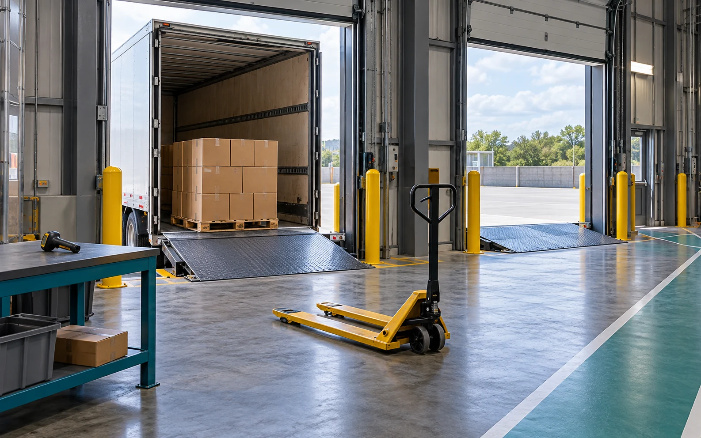

AI-GENERATED ILLUSTRATION
Inbound receiving
AI-generated illustration: An illustrative receiving dock with a plain trailer, palletised cartons, receiving bench and manual pallet jack. This is a fictional educational scene, not a photograph of a real facility.
View generation prompt
Use case: photorealistic-natural. Asset type: landscape educational image for an interactive retail warehouse website. Create ONE original photorealistic illustration of inbound receiving at a modern generic warehouse. Wide landscape composition, approximately 16:10. View from inside the building towards two open dock doors; an unbranded trailer backed into one door; a pallet of plain closed kraft cartons just inside the dock; an empty manual pallet jack and a low receiving bench with a handheld scanner. Show a clearly separated pedestrian walkway and realistic dock leveller, yellow safety bollards, neutral steel structure. No people. The primary subject is the receiving handoff, not storage racks or picking robots. Physically plausible equipment, tidy operational warehouse, natural skylight and soft industrial lights, slate gray, teal safety accents and warm kraft cardboard, documentary photography feel, eye-level three-quarter view, sharp usable detail. No copied composition or real company facility, no logos, trademarks, watermarks, words, numbers, signage, barcodes, QR codes, shipping labels, badges or personal data. No captions, text overlay, collage or multi-panel image. Generate from this description alone.